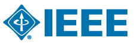

Välkommen !
SSRR 2013 will be hosted this year at Linköping, Sweden. The 11th anniversary of the IEEE International Symposium on Safety, Security, and Rescue Robotics will continue its tradition of attracting cutting-edge papers in the theory and practice of robots for rapid and secure inspection of critical infrastructure, travelers, luggage, and paces; disaster response and recovery; humanitarian demining, disaster mitigation and recovery; detection of chemical, biological and radiological risks and operations in these dangerous sites; etc
- Paper submission is closed. The submission deadline has been extended to August 2nd (was July 19).
- Papers will appear in IEEExplore.
- Outstanding papers with field results will be invited to the special journal issue on SSRR
Invited Speakers
We are proud to present the following invited speakers:
- Maria Gini, University of Minnesota, USA, Exploiting spatial locality and heterogeneity of agents for search and rescue teamwork
- Simon Lacroix, LAAS, France, Autonomous teams of aerial and ground robots in search and rescue missions
- Claudio Melchiorri, Club Alpino Italiano and University of Bologna, Italy, Application of Robotic Technologies to Mountain Rescue
- more to be announced ...
Activities
- The co-located SSRR Rescue Camp 2013
- more be announced ...
Supported by
- IEEE Robotics and Automation Society
- Linköping University
Important Dates
- Jun 14, 2013
- Submission of proposals for tutorials, special sessions
- Aug 2nd (
Jul 19), 2013 - Submission of regular papers, center/project papers, and visioning papers
- Sep 6 (
Aug 26), 2013 - Notification of acceptance
- Sep 13 (
Sep 6), 2013 - Submission of 2 page Late Breaking Reports
- Sep 27, 2013
- Submission of final papers
- Oct 21-26, 2013
- Symposium
News
- Jul. 18, 2013
- Submission deadline extended to August 2nd
- Jul. 04, 2013
- Added Link to the SSRR Rescue Camp 2013
- Jun. 01, 2013
- Paper submission is open.
- Jan. 29, 2013
- The new website for SSRR 2013 is up.
Contact info
Fredrik Heintz (fredrik.heintz AT liu.se) andAlexander Kleiner (alexander.kleiner AT liu.se)
Previous SSRR events
No Stylesheet Loaded
Could not load Kickstrap.There are several common reasons for this error.